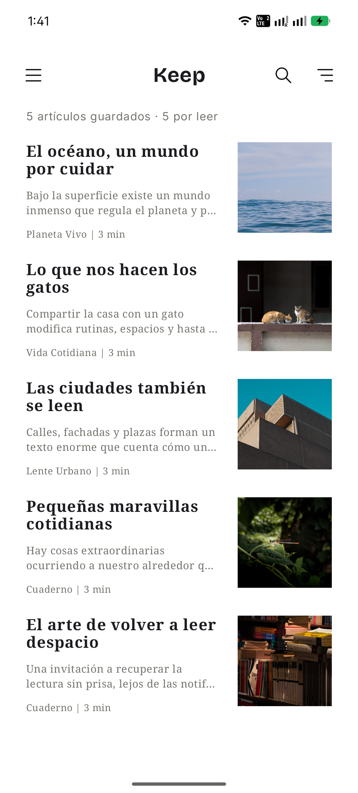
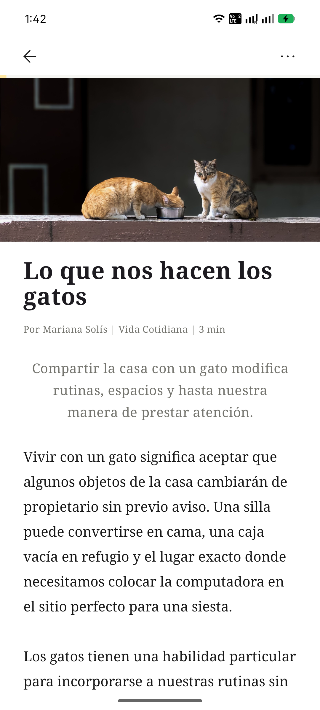
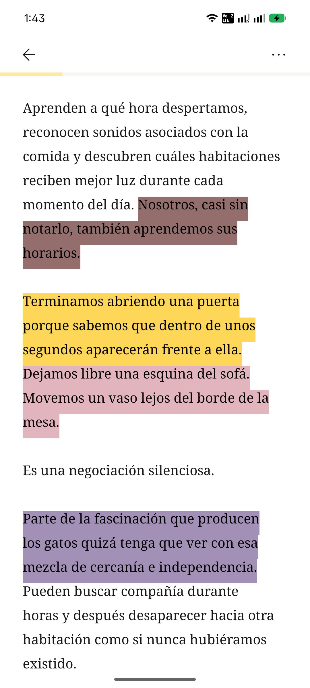
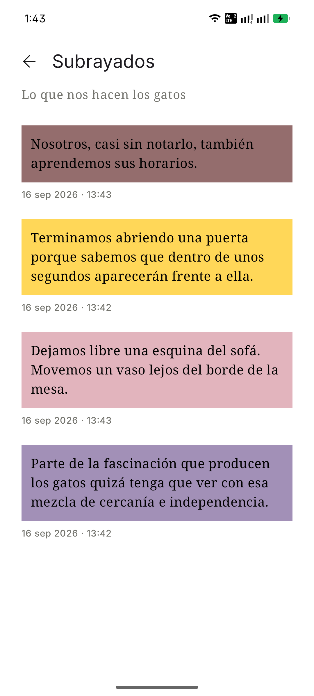
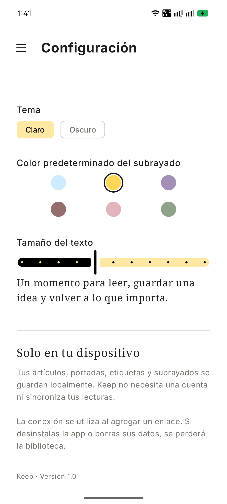

Tu lectura, contigo.
Guarda lo que quieres leer. Vuelve cuando quieras.
Guarda artículos de la web, léelos sin conexión y conserva tus subrayados en un espacio simple, tranquilo y personal.
Próximamente en Google PlaySin cuenta · Sin suscripción · Guardado en tu dispositivo


Lectura sin ruido
El artículo. Nada más.
Keep convierte lo que guardas en una experiencia de lectura limpia y cómoda, conservando la información esencial y las imágenes del artículo. Una vez guardado, puedes volver a leerlo sin conexión.

Quédate con lo importante
Subraya ideas. Encuéntralas después.
Marca fragmentos con distintos colores y consulta todos tus subrayados desde un mismo lugar. Keep está pensado para leer, recordar y volver a lo que importa.
Local-first
Tus lecturas son tuyas.
Los artículos que guardas con Keep se almacenan localmente en tu dispositivo. Keep no aloja ni publica una biblioteca de los artículos guardados por los usuarios.
Sin cuentaNo necesitas registrarte para crear y usar tu biblioteca.
En tu dispositivoArtículos, imágenes, etiquetas, subrayados y progreso de lectura permanecen almacenados localmente.
Internet cuando lo necesitasLa conexión se utiliza para obtener el artículo cuando decides guardar un enlace. Después puedes leer la copia local sin conexión.
Hecho para leer
Simple por fuera.
Útil donde importa.

